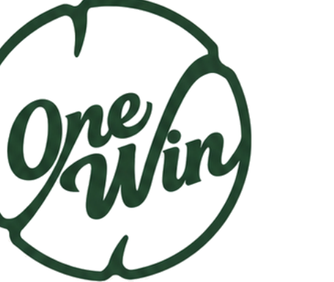
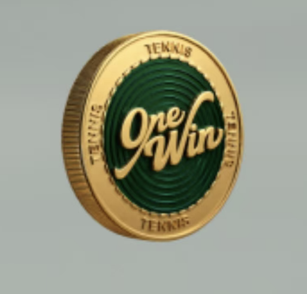
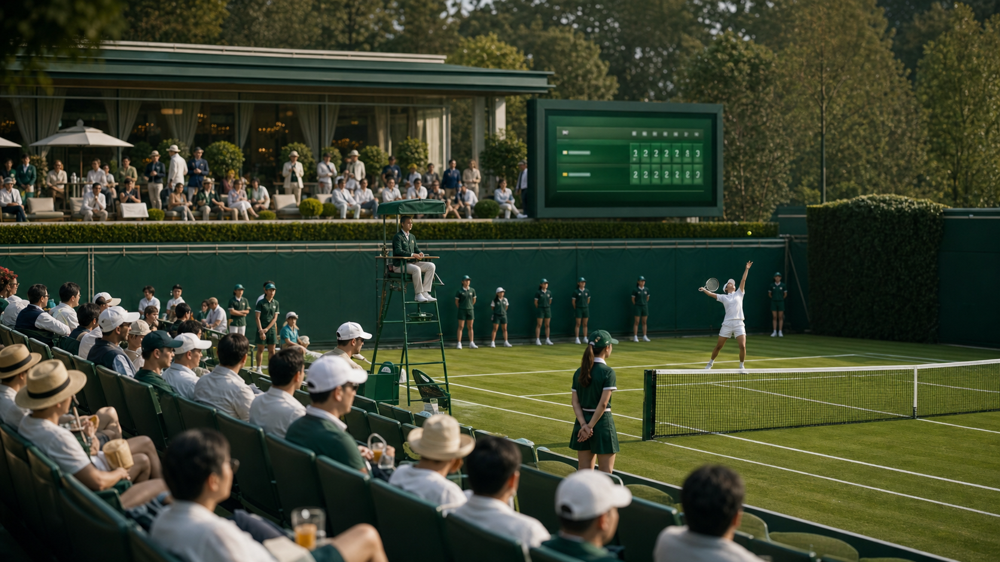
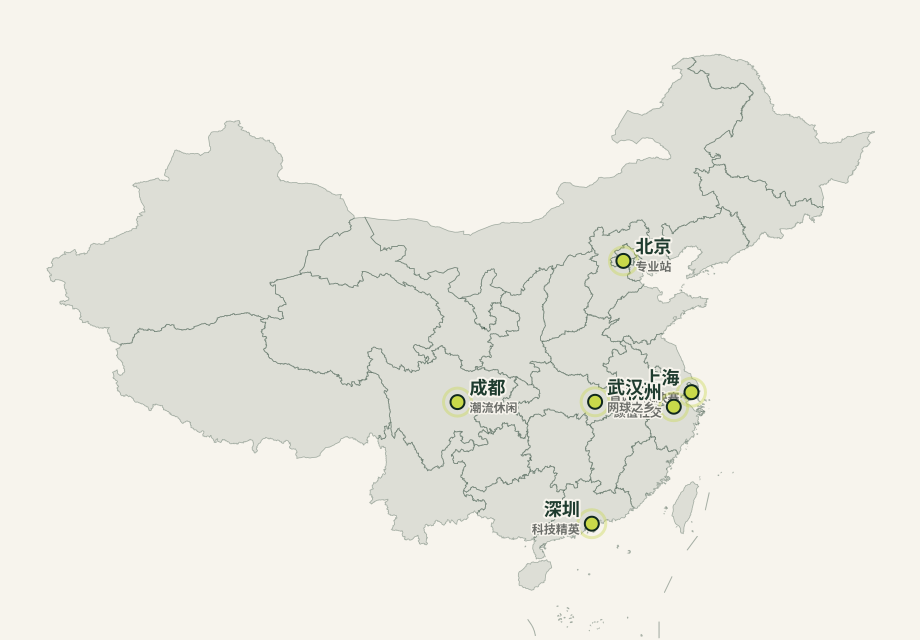
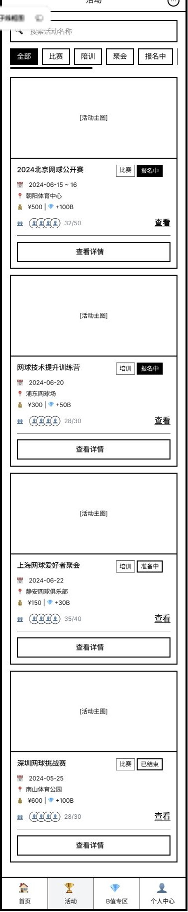
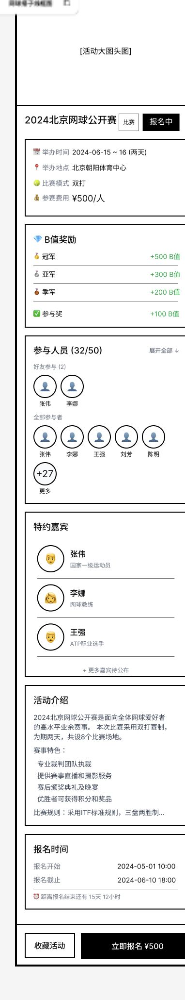
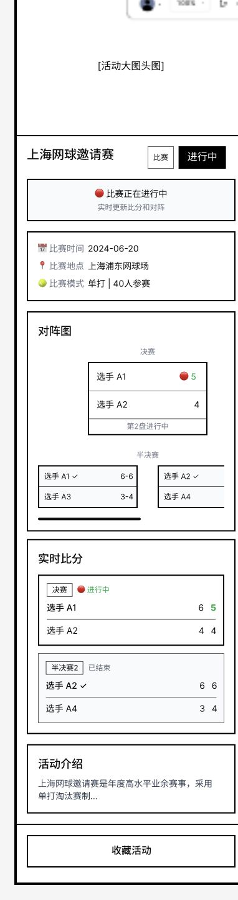
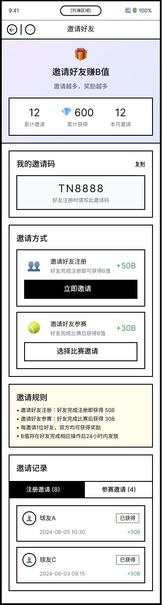
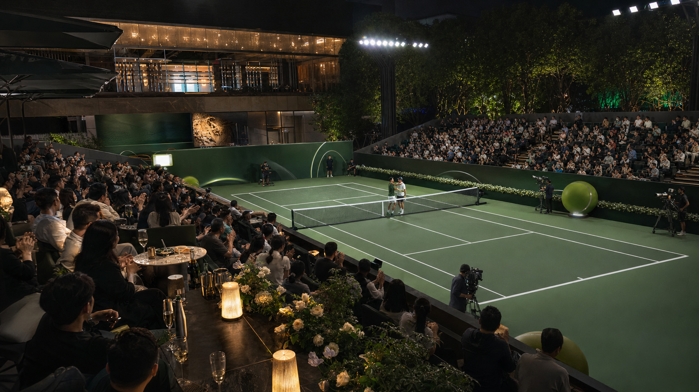

小白 / 新人
痛点 回合少、捡球多、挫败感强；向往优雅标签，却缺少无压力社交入口。
社交娱乐化赛事 + 潮流主题活动
下载 BPChina's Panoramic Tennis Lifestyle IP
重构中国新中产的网球社交与生活方式生态
连接 2,518.8 万网球人口与专业生态的全景式超级 IP。
Market Insight
繁荣数据背后的结构性鸿沟，正是 One Win 的商业切入点。
中国网球人口全球第二，三年增幅 28.03%。网球裙、网球鞋等 Tenniscore 消费高速增长。
教练资源以初级发展类为主，大众水平长期卡在 NTRP 1.5-2.5，传统赛事门槛过高。
Audience Matrix
通过分层化产品解决不同段位用户痛点，实现全生命周期留存。
痛点 回合少、捡球多、挫败感强；向往优雅标签，却缺少无压力社交入口。
社交娱乐化赛事 + 潮流主题活动痛点 有基础但缺乏比赛信心，害怕被传统硬核比赛横扫。
低门槛趣味 / 分级竞赛 + 大满贯仪式感痛点 排斥无效社交，渴望高强度对抗和高光舞台。
专业分级赛 + 社群导师荣誉身份Positioning
我们是网球界的 Lululemon + Strava，一个集专业、娱乐、观赛、旅游、社交于一体的全景式运动生活 IP。
O2O Flywheel

Format Engine

Offline Moat
City Matrix
从高势能圈层引爆，到高净值社群深耕。

Mini Program
用小程序替代传统第三方报名，实现报名、分级匹配、赛场互动、数据沉淀与社区社交闭环。




WinToken Economics
通过双轨制积分，将用户运动数据与商业权益深度绑定。
完善基础信息、每日步数打卡、赢球奖励、好友裂变、分享笔记。
报名费抵扣、赞助商实物抽奖、虚拟勋章、搭子大厅置顶卡、赛事免排队。
实名认证、GPS 与打卡频率风控算法，保障排行榜与积分商城的公平性和公信力。
TBTI Social Card
Unfair Advantage 01
Unfair Advantage 02
P3 资源合伙人赋能，确保赛事话题性与传播度。
Monetization
B 端品牌溢价与 C 端高净值服务结合，形成多元健康的营收结构。
冠名权、指定用车 / 用表 / 饮用水、指定运动装备。
启动页、Banner、Keep 联合招商及活动分成。
WinToken + 现金报名费，观赛派对与潮流集市门票。
澳网 / 温网圆梦之旅，免排队卡、置顶卡等虚拟道具。
Unit Economics
场地租赁3-5万
舞美搭建3万
兼职运营3万
KOL 差旅10万
机动费用1万
Team
经验互补的铁三角操盘，辅以极具狼性的城市主理人激励机制。
2026 Roadmap

The Ask
40% 线下 12 城赛事体验升级
30% 线上产品迭代研发
20% 品牌市场推广与首场公关
10% 日常运营备用金
Risk Control
每一分钱都与资源、DAU 和融资到账钩稽。
核心员工期权池，为城市主理人与后续高管留足激励空间。
8 月上海站 Tier 2 明星 / KOL 资源按时到位，解锁第一阶段股权。
协助 500 万融资到款，12 月总决赛 Tier 1 明星出席，解锁剩余股权。